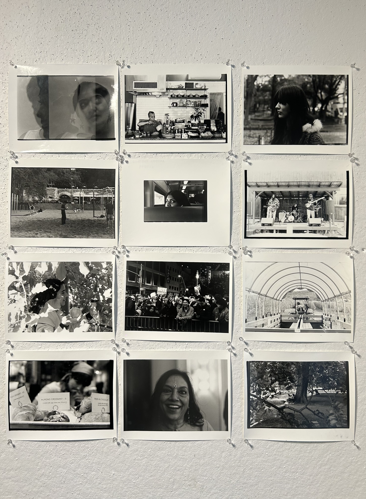
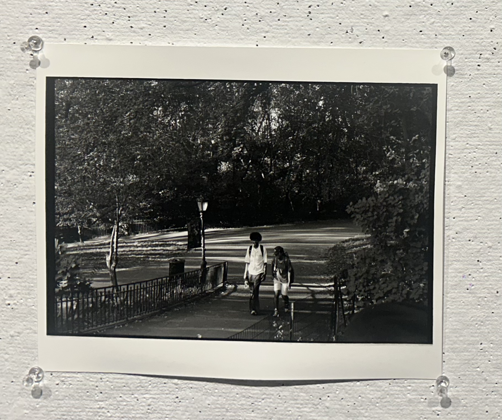

Anushka
Khetawat
Endlessly curious about people, systems, and the zero-to-one moments where ambiguity meets opportunity.
SCROLL

Endlessly curious about people, systems, and the zero-to-one moments where ambiguity meets opportunity.

I'm endlessly curious about people—what drives them, what holds them back, and how we can design better solutions.
Growing up in New Delhi, I watched my father build his startup from the ground up. His journey made me fall in love with both startups and the people behind them—the resilience, the uncertainty, the relentless drive to turn an idea into something real.
That early education in scrappiness took me everywhere. From conducting field research with Delhi street vendors (studying permits, credit access, systemic barriers) to designing financial literacy tools for international students, and now into early-stage venture capital at Thomson Reuters Ventures.
The zero-to-one phase is where things get interesting—when ambiguity meets opportunity. I move quickly, ask uncomfortable questions early, and relentlessly focus on who gets excluded from the systems we're building.
Energy, empathy, and a healthy dose of scrappiness guide everything I do.
Evaluating 50+ startups, writing investment briefs, and leveraging proprietary AI tools to identify cross-border opportunities. I'm learning to spot potential when the full picture isn't clear—assessing founders, markets, and business models to inform high-conviction investment decisions. Also leading content initiatives to connect with younger founders and expand our ecosystem.
Identified new business opportunities in banking and real estate, led client outreach, and managed brand visibility on LinkedIn. Living in Milan taught me how to navigate unfamiliar markets, build relationships across cultures, and communicate value in different contexts.
Developed quantitative metrics to assess ESG impact across 125+ portfolio companies. Designed benchmarking tools and collaborated with the investment team to align outcomes with UN Sustainable Development Goals. This is where I learned that impact isn't just a buzzword—it's measurable, strategic, and essential to building companies that last.
Spent a summer in Delhi's streets talking to vendors about permits, credit access, and the invisible barriers keeping them informal. When vendors were hesitant to share financial details, I had to pivot—build trust, observe patterns, and draw conclusions from incomplete data. This taught me how to make decisions with ambiguity, a skill that translates directly to evaluating early-stage companies.
Organized 3 TEDx events with 100+ attendees each, coached 50+ students on public speaking, and led workshops reaching 200+ people. I believe the best ideas die in silence—so I'm obsessed with helping people find their voice and tell their stories with confidence.
Built a community celebrating South Asian identity through speaker events, panels, and a curated zine featuring 20+ contributors. Increased attendance by 40% and created space for conversations about culture, entrepreneurship, and belonging.
Served as a student advisor helping peers navigate leadership development programs, workshops, and mentorship opportunities. Being embedded in Athena's ecosystem deepened my conviction that leadership is learnable—and that the most powerful thing you can do is help someone else believe that too.
Documenting campus life and culture through the lens of Ratrock, Columbia's student-run magazine. Photography is where I slow down and notice the details everyone else walks past.
Founded a poetry society and launched a school blog that gave students a platform to write honestly about their experiences. Creating space for creative voices—especially quiet ones—has always felt like the most important work I can do.
Selected for a competitive program bringing together emerging leaders across cultures to build the skills and perspective needed to lead across difference. It's where I first started thinking seriously about what leadership actually means—and who gets to claim it.
What happens when 2.5 million people operate in the shadows of the formal economy? I spent a summer in Delhi studying street vendors—their financial patterns, the systemic barriers they face, and the policy gaps that keep them informal. The research led to actionable recommendations for policymakers and a deeper understanding of how credit access shapes livelihoods.
Read PaperI'm constantly exploring the intersections of economics, impact investing, and entrepreneurship. More research and writing on the way—stay tuned.
Black and white film photography—my way of slowing down and noticing the details. Every frame is intentional, every shot tells a story.


